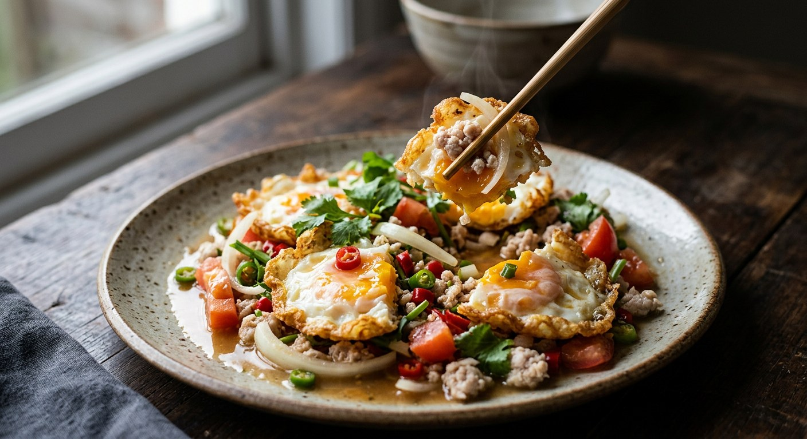

ยำไข่ดาว Fried Egg Salad
Crispy fried eggs tossed in a tangy, sweet-sour Thai dressing with fresh vegetables. This beloved salad transforms the humble fried egg into a refreshing, flavourful dish that's perfect as a light meal or side.

Ingredients
For the Eggs
- 4 chicken eggs (or 3 eggs for lighter portions)
- 1 cup vegetable oil for deep frying
For the Dressing
- 2 tbsp fish sauce
- 2 tbsp fresh lime juice
- 1–2 tbsp palm sugar or cane sugar
- 2 tsp seasoning powder (optional, for umami depth)
For the Salad
- 1 cup ground pork (optional but traditional)
- 1 medium onion, sliced
- 1 large tomato, diced
- 2 tbsp fresh red chilli, sliced adjust to taste
- ½ cup shredded carrot
- ½ cup celery leaves or green onions
Method
- Fry the eggs: Heat oil in a wok or deep pan over medium-high heat. When hot, carefully crack eggs into the oil one at a time. Fry until golden and crispy on both sides, with set yolks. Drain on paper towels and cut into bite-sized pieces when slightly cooled.
- Cook the pork (if using): In a separate pan, add a splash of water and the ground pork. Cook over medium heat, breaking it up, until fully cooked and most liquid has evaporated. Season lightly with a pinch of the seasoning powder.
- Make the dressing: In a large mixing bowl, whisk together fish sauce, lime juice, and palm sugar until the sugar dissolves. Taste and adjust the balance — it should be tangy, slightly sweet, and salty.
- Assemble the salad: Add the cooked pork (if using), sliced onion, diced tomato, chilli, and shredded carrot to the dressing. Toss gently to combine.
- Finish and serve: Add the fried egg pieces and celery leaves. Toss very gently to coat without breaking up the eggs. Transfer to a serving plate and serve immediately.
Chef's Notes
- Perfect frying: Use hot oil (medium-high heat) for crispy, fluffy eggs that don't absorb too much oil. Fresh eggs hold together better during frying.
- Timing matters: Cut the eggs while still slightly warm — they'll be easier to handle and stay crispy. Don't let them cool completely or they become chewy.
- Clean oil: Use fresh oil that hasn't been used for other dishes to avoid off-flavours in the eggs.
- Balance the dressing: The ideal yam dressing has equal parts sour, sweet, and salty, with heat to taste. Start with less sugar and add more if needed.
- Protein variations: Some recipes skip the pork entirely for a lighter dish, while others add cooked chicken, prawns, or squid.
Where Thai Sources Disagree
Method Complexity
Simple approach (NLove Cooking, Aroifin): Fry eggs, make dressing separately, toss together — just 3 steps.
Detailed approach (Kapook, TrueID): Includes cooking pork separately, more detailed seasoning steps, specific resting and mixing instructions — up to 6 steps.
Our take: We've included the pork step as optional, giving you both the simple egg-only version and the more substantial traditional preparation.
Sugar Quantity
Sweet version (NLove Cooking, Aroifin): 2 tbsp sugar for a notably sweet-sour balance.
Subtle version (Kapook, TrueID): 1 tsp sugar for a more tart, less sweet profile.
Our take: Start with 1 tbsp and adjust to taste — Thai salads should have prominent sour notes with just enough sweetness to round out the flavours.